책으로 자라는 교실의 명작 서재
학교 현장의 고민을 담아, 학생들의 성장을 바라는 선생님들이 직접 만들었습니다.
부기를 만든 이유
AI가 답을 내놓아도 읽고 이해하고 판단하는 힘은 학생 안에 쌓여야 합니다. 요약과 답안을 맡기는 동안 직접 읽고 근거를 찾고 자기 말로 정리하는 연습을 건너뛰지 않도록 돕습니다.
친구의 말을 끝까지 듣고, 들은 뜻을 다시 말합니다. 인물의 말과 행동에서 감정의 단서를 찾고 다른 입장에서 장면을 읽습니다. 교사는 학생의 답을 살펴 우리 반의 듣기와 공감이 어떻게 드러났는지 돌아보고 다음 질문을 고칩니다.
전자도서관과 읽기 자료가 있어도 어려운 어휘의 뜻을 모르면 이해와 재미가 끊길 수 있습니다. 부기는 읽던 자리의 뜻풀이, 인물 대화, 독후 표현과 교사 피드백을 연결해 한 권을 읽는 경험을 돕습니다.
온라인에서는 화면에 답하고 독서 포트폴리오에 모읍니다. 오프라인에서는 같은 활동지와 양식을 인쇄해 손글씨, 그림, 역할극으로 수업합니다.
근거: Kreijkes 외(2026), Computers & Education 243, 105514.
부기를 소개합니다
부기는 초등학생이 책 한 권을 마지막 쪽까지 읽도록 곁에서 거드는 디지털 서재입니다. 학년마다 50권씩 모두 300권의 명작을 학생 눈높이에 맞춰 한국어로 새로 썼고, 모르는 낱말은 누르면 읽던 자리에서 뜻이 뜹니다.
요즘 학생들은 궁금한 것을 AI에게 물어 몇 초 만에 답을 받고, 독후감까지 그렇게 받아 낼 수 있습니다. 그래도 낱말을 하나씩 헤아리며 책장을 넘긴 시간은 학생 몫으로 남고, 그 시간이 쌓여야 어휘력과 문해력, 스스로 생각하는 힘이 자랍니다.
부기는 책을 건네는 데서 그치지 않습니다. 학생은 책 속 인물이 되어 가 보지 못한 곳에 가 보고, 되어 보지 못한 사람이 되어 봅니다. 인물의 선택 앞에서 “나라면?” 하고 묻다 보면 제 마음을 알게 되고, 다른 사람의 처지에 서 보면 친구의 마음도 헤아리게 됩니다. 부기는 그렇게 책에서 나를 알고, 세상을 넓히고, 함께 살아가는 힘을 기릅니다.

영상으로 보는 부기
선생님께: 책 고르기부터 수업 설계, 독후활동, 기록장까지
1부기를 만든 이유
한 쪽에 모르는 낱말이 서너 개 나오면 학생은 거기서 멈춥니다. 뜻을 모르니 장면이 그려지지 않고, 장면이 안 그려지니 재미도 없어 결국 책 읽기를 포기합니다.

옛날 한 젊은 선비가 를 보러 한양으로 길을 떠났다. 활 솜씨가 선비가 깊은 산길을 지나는데, 어디선가 까치들이 다급하게 소리가 들렸다.
밑줄 친 낱말을 누르면 부기에서처럼 뜻이 뜹니다.
본문과 뜻풀이는 부기 3학년 「은혜 갚은 까치」에 실린 그대로입니다.
낱말을 어느 정도 알아야 사전 없이 글을 읽을 수 있는지 살핀 연구가 있습니다. 80%를 알 때는 내용을 충분히 이해한 사람이 없었고, 90~95%에서도 대부분이 어려워했습니다. 98% 안팎을 알아야 도움 없이 읽었습니다.
Hu, M. & Nation, P. (2000). Unknown vocabulary density and reading comprehension. Reading in a Foreign Language, 13(1).

만 15세 학생 가운데 읽기 성취가 기초 수준(2수준)에 못 미치는 비율입니다. 일곱 명에 한 명꼴입니다.
교사 5,848명 가운데 학생들의 문해력이 예전보다 떨어졌다고 답한 비율입니다. 기사 제목은 이랬습니다. ‘사건의 시발점’이란 말에 “선생님이 왜 욕해요?” 하는 학생들
한 해에 책을 한 권이라도 읽은 비율입니다. 학생은 94.6%, 성인은 38.5%로 1994년 조사를 시작한 뒤 처음 40% 아래로 내려갔습니다.
교육부, 한국교육과정평가원 「OECD 국제 학업성취도 평가(PISA 2022) 결과」, 2023.12.5. / 한국교원단체총연합회 「학생 문해력 실태 교원 인식조사」, 2024.10.7. / 문화체육관광부 「2025년 국민 독서실태 조사」, 2026.3.6.
잘 읽는 학생은 더 많이 읽고, 읽은 만큼 낱말과 배경지식이 늘어 다음 책이 쉬워집니다. 스타노비치는 1986년 이 현상을 읽기의 ‘마태 효과’라고 불렀고, 99편의 연구를 모은 분석에서도 읽는 힘과 읽는 양은 서로를 키웠습니다. 그래서 처음 한 권을 끝까지 읽게 하는 일이 고리를 돌리는 첫 힘이 됩니다.
지식은 AI가 더 빨리 찾아 주는 시대입니다. 그래도 여러 사람과 어울리며 문제를 풀고 함께 자라는 일은 끝까지 사람의 몫으로 남습니다. 한 사람이 살 수 있는 삶은 하나뿐이지만, 책 한 권은 또 한 번의 삶입니다. 책에서 함께 이야기해 본 문제가 우리 사회의 문제를 함께 풀어 갈 힘의 밑바탕이 됩니다.
인물의 선택 앞에서 “나라면?” 하고 묻고, 줄 그은 문장과 메모, 속마음 말풍선으로 내 마음을 말로 꺼냅니다.
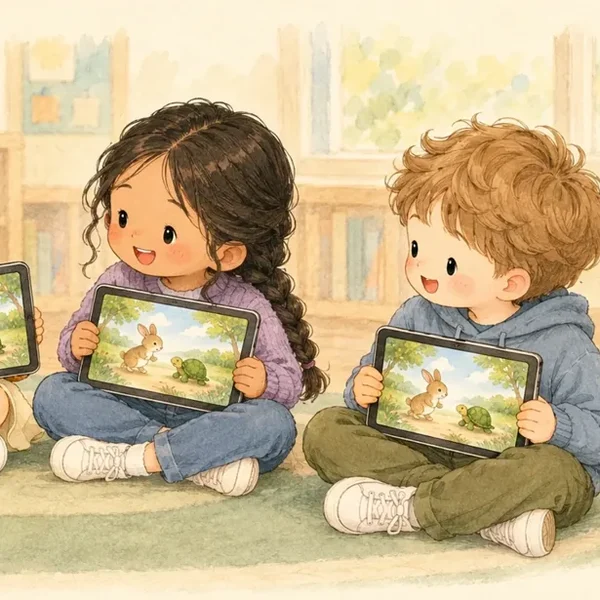
세상을 넓히는 힘다른 나라, 다른 시대, 다른 처지의 삶을 미리 살아 봅니다. 가난과 차별, 정의 같은 사회의 물음을 이야기로 처음 만납니다.
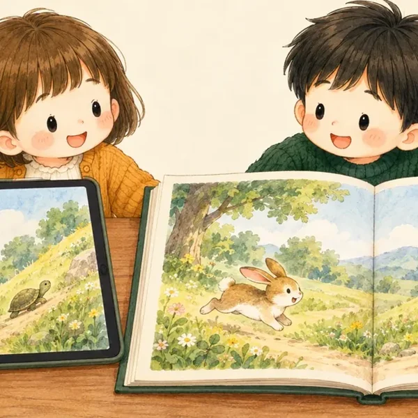
함께 살아가는 힘다른 사람의 마음을 헤아리고, 제 생각을 까닭과 함께 말하고, 친구의 생각을 들으며 함께 답을 찾습니다.
한국교육신문 「신학기 모든 학교에서 사회정서교육 확대」, 2026.1.27. / 경상남도교육청 「2026학년도 독서인문교육 추진 계획」, 2026.2. / CASEL 사회정서학습 역량 틀
2300권의 서재
이솝 우화와 전래 동화에서 「레 미제라블」, 「삼국지」까지 학년마다 50권씩 골랐습니다. 학년이 오를수록 이야기가 길어지고 다루는 생각이 깊어집니다. 생각이 닿는 곳도 나에서 친구로, 이웃과 사회로, 인간과 세상으로 넓어집니다.


짧은 전래, 우화, 동물 이야기토끼와 거북이, 여우와 신 포도, 해와 달이 된 오누이, 금도끼 은도끼생각이 닿는 곳: 내 마음(정직, 꾸준함, 욕심)


그림 형제와 안데르센 명작 동화, 옛이야기미운 오리 새끼, 브레멘 음악대, 콩쥐팥쥐, 별주부전생각이 닿는 곳: 나와 가족, 이웃(다름을 받아들이기)


한 권 분량 동화, 우정과 마음의 성장행복한 왕자, 눈의 여왕, 플랜더스의 개, 은혜 갚은 까치생각이 닿는 곳: 친구(우정, 나눔, 은혜)


명작 동화와 모험, 세계와 자연 이해어린 왕자, 오즈의 마법사, 작은 아씨들, 심청전생각이 닿는 곳: 더 넓은 세계(자연과 다른 삶)


장편 명작, 모험과 성장, 고전소설 입문빨간 머리 앤, 80일간의 세계일주, 홍길동전, 춘향전생각이 닿는 곳: 이웃과 사회(신분, 공정, 나다움)


장편, 시, 사회, 인간과 세상 이해레 미제라블, 큰 바위 얼굴, 삼국지, 하늘과 바람과 별과 시생각이 닿는 곳: 인간과 세상(가난과 정의, 용서, 공동체)

원작의 줄거리와 인물, 주제와 정서는 지키고, 현직 선생님과 작가가 함께 학년 눈높이에 맞춰 다시 썼습니다. 선생님은 교육과정 이해와 학생 지도 경험을, 작가는 문학적 표현을 보탰습니다. 문장 길이와 낱말 수준, 이야기 전개는 그 학년의 읽기 능력에 맞췄습니다. 다 쓴 글은 교사와 학부모가 아이 곁에서 함께 읽어 보며, 아이가 멈칫하는 곳과 어려워하는 낱말을 찾아 다듬었습니다.
서가는 학년별로 나뉘어 있지만 다른 학년 책도 골라 읽을 수 있습니다. 선생님이 우리 반 책을 정하면 학생 화면 맨 위에 뜹니다.
저자 사후 70년이 지난 작품과 전래 이야기만 골라 한국어로 새로 옮겼습니다. 기존 번역본은 쓰지 않았습니다.

1, 2학년 그림책에는 학생들이 이야기를 더 잘 이해하도록 장면마다 삽화를 넣었습니다. 삽화는 글에 나온 인물과 배경, 그 장면의 분위기를 그대로 보여 줍니다.
강한 색과 빠른 움직임 대신 번지는 색과 조용한 장면을 담아, 학생들이 마음을 가라앉히고 이야기에 머물도록 했습니다.
그림과 글을 신국판(152×225mm) 비율로 짰습니다. 화면에서 읽은 그 판을 그대로 종이책으로도 펴낼 계획입니다.
3읽는 화면
책갈피를 끼우고, 마음에 든 문장에 줄을 긋고, 여백에 메모하던 일을 화면에서도 똑같이 합니다. 여기에 종이책으로는 할 수 없는 일, 모르는 낱말을 그 자리에서 풀어 주는 일을 더했습니다.

1학년부터 4학년까지 200권은 지금 한국어, 영어, 베트남어, 러시아어로 읽을 수 있습니다. 「나란히」를 켜면 고른 말과 한국어가 맞붙어 놓이고, 그림과 쪽 순서는 언어를 바꿔도 그대로입니다.


2026년 초중고 이주배경학생은 210,838명으로 전체 학생의 4.3%입니다. 부기는 지금의 네 개 언어에 더해 언어를 차례로 늘려, 여러 나라 학생 누구나 자기 나라 말과 한국어로 같은 책을 읽도록 할 계획입니다.
교육부 「2026년 교육기본통계」, 2026.8.26.
4학생 화면
학생이 로그인하면 「나의 책상」이 열립니다. 지금 읽는 책과 네 칸짜리 길이 놓여 있어, 「이어 읽기」를 누르면 읽던 쪽이 바로 열립니다.


책을 끝까지 읽으면 그 책의 인물 옷을 입은 내 모습이 「내 책 옷장」에 열립니다. 새 소품을 모으는 즐거움이 다음 책을 읽는 동기가 됩니다.


책을 다 읽으면 책 속 인물이 된 부기가 말을 겁니다. 질문은 책마다 장면과 인물에 맞춰 미리 써 둔 발문이고, 선생님이 지도안의 발문을 고치면 함께 바뀝니다. 인물의 자리에 서서 답해 보는 일은 다른 사람의 마음을 헤아려 보는 연습이 됩니다.
60초 영상 「정답 대신, 질문을」
“토끼는 어떤 친구인 것 같아? 그렇게 생각한 까닭은?”「토끼와 거북이」 「인물 만나기」 차시 발문
부기의 AI는 OpenAI와 Anthropic(Claude)를 쓰고, 데이터 무보관(ZDR)을 적용해 아이의 글이 남지 않고 학습에도 쓰이지 않습니다.
몇 권을 읽었는지보다, 무엇을 느끼고 어떻게 달라졌는지가 남습니다. 읽으며 그은 줄과 메모, 스스로 고른 독후활동, 인물, 작가와 나눈 대화가 따로 숙제 없이 학생마다 모여 한 사람의 독서 이야기가 됩니다.
3월부터 10월까지 달마다 읽은 책, 즐겨 읽은 분야는 동화
「행복한 왕자」 마음에 남은 장면
“나라면 내 보석을 다 내줄 수 있을까?”
줄 그은 문장, 메모, 속마음 말풍선, 마음 일기(고른 것만)
「플랜더스의 개」 작가와의 대화
생각거리: 가난, 꿈, 어른의 몫
책으로 다녀온 시대와 나라, 만난 사회의 물음
인물에게 편지, 친구와 나눈 글
선생님 도장 「멋진 생각이에요」
인물과 대화, 함께 쓰는 교실, 우리 반 전시장
3월 “재미있었다.”
10월 “제비가 떠나지 않은 까닭은 왕자를 아꼈기 때문인 것 같다.”
처음 글과 지금 글, 어휘 수준 변화, 내가 고른 한 장
책마다 그 책에서 남긴 기록이 한 장에 모입니다. 내 책장에서 책을 누르면 열립니다.
학년이 끝나면 한 해의 장이 「○학년 독서 이야기」 한 권으로 묶이고, 학생이 고른 한 장과 돌아보는 한 줄이 끝에 붙습니다.
마음 일기와 속마음 기록은 학생이 보여 주기로 고른 것만 실립니다. 선생님은 상담과 기록에, 학부모는 아이와 이야기 나눌 때 씁니다.

책마다 내용을 확인하는 짧은 퀴즈가 붙어 있습니다. 정답률은 학생의 「내 성장」과 선생님의 「우리 반 성장」에 쌓입니다.
퀴즈로 읽은 내용을 짚고, 인물과 대화로 생각을 묻고, 독후활동으로 그 생각을 글과 그림으로 남깁니다.
5책 밖으로 이어지는 독서
화면에서 읽은 책이 손으로 만지고 몸으로 노는 경험까지 이어지도록, 부기는 실물 자료를 함께 만들었습니다.


서재에서 책을 고르면 그 책의 세계로 걸어 들어가는 공간을 구상하고 있습니다. 종이인형책과 같은 옷을 입은 부기 친구가 숲에서 토끼, 거북이와 이야기를 나누고, 출발선에 서서 경주 장면을 연기합니다.


6선생님 화면
선생님이 로그인하면 교사 홈에 우리 반 현황이 먼저 뜹니다. 읽기, 인물과 대화, 활동, 완주 네 칸 위에 학생들 얼굴이 놓여, 누가 어디까지 왔는지 한 번에 보입니다.


선생님이 학급에서 해결하고 싶은 문제를 적으면 부기가 수업 질문 후보와 서재 300권 가운데 맞는 책 세 권을 제안합니다. 책을 고르면 2차시 수업 설계안이 만들어지고, 선생님이 고칠 내용을 입력하면 바뀐 줄이 표시됩니다.
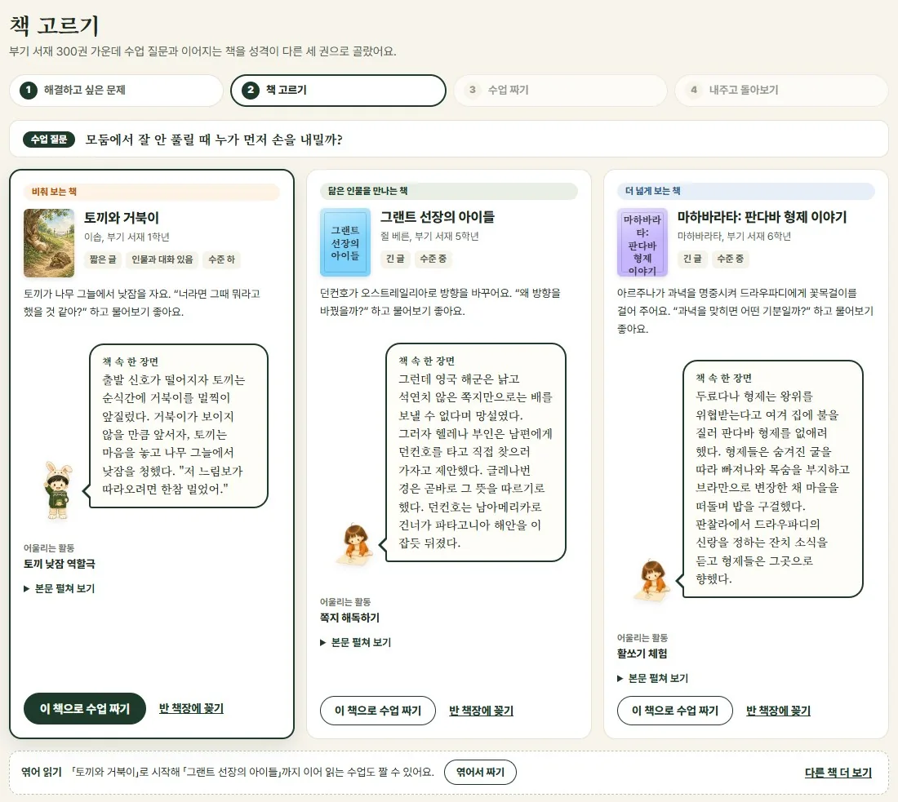
아래는 3학년, 5학년, 6학년 학급 고민으로 짠 설계안입니다. 3학년은 장면을 그림으로 옮기는 활동, 5학년은 두 인물의 행동 비교, 6학년은 인물의 선택 비교와 편지 고쳐 쓰기가 중심입니다. 책 속 인물과의 대화는 학년에 따라 아래 세 가지 방식 가운데 하나로 운영합니다.
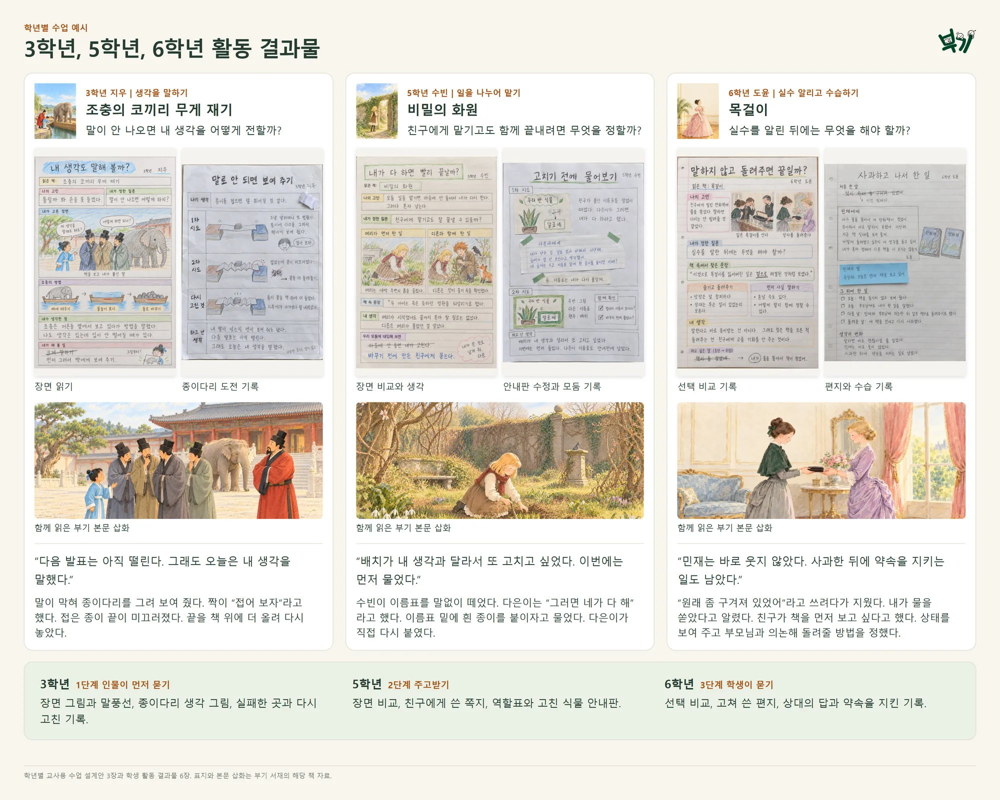
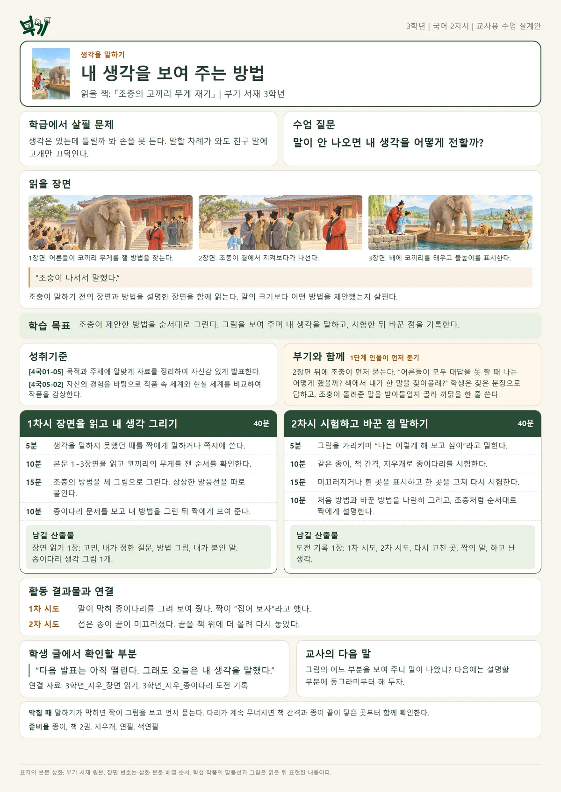
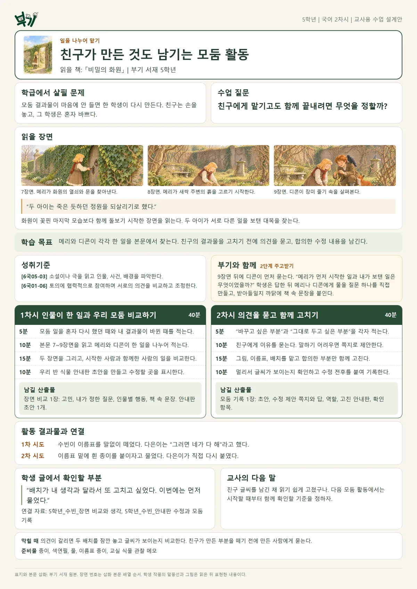
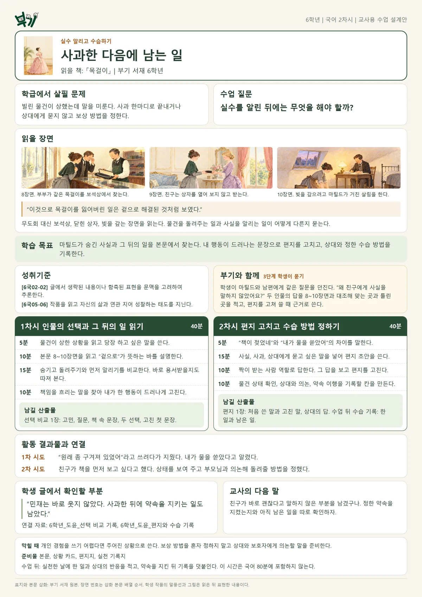
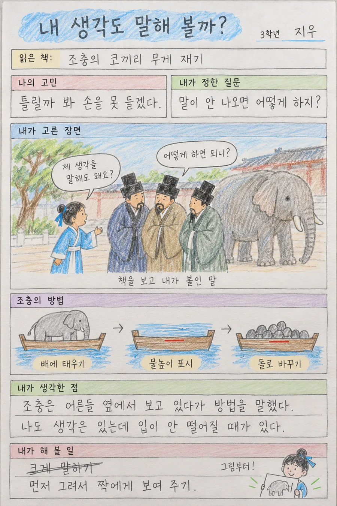
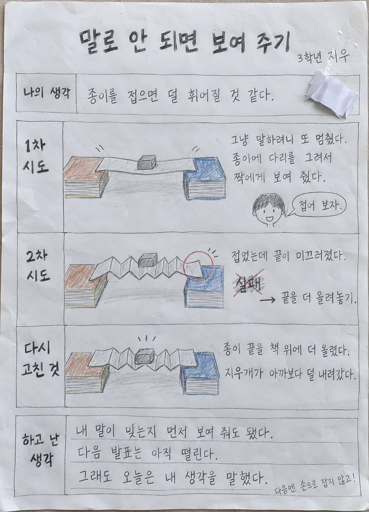
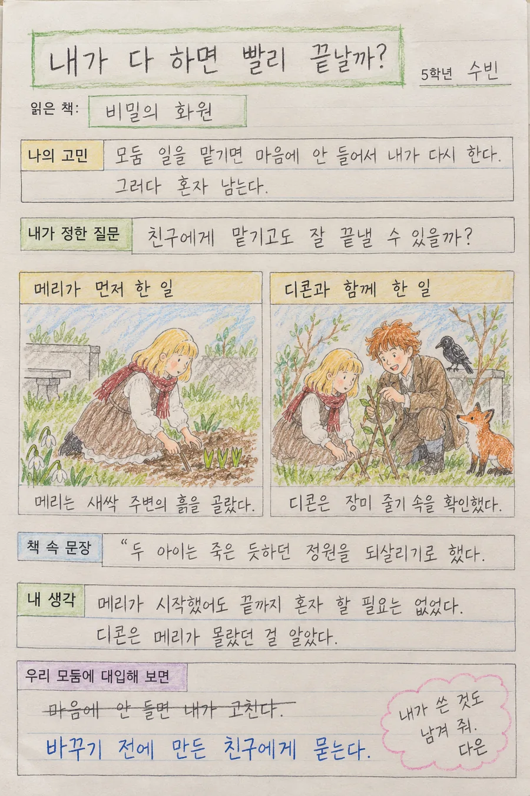
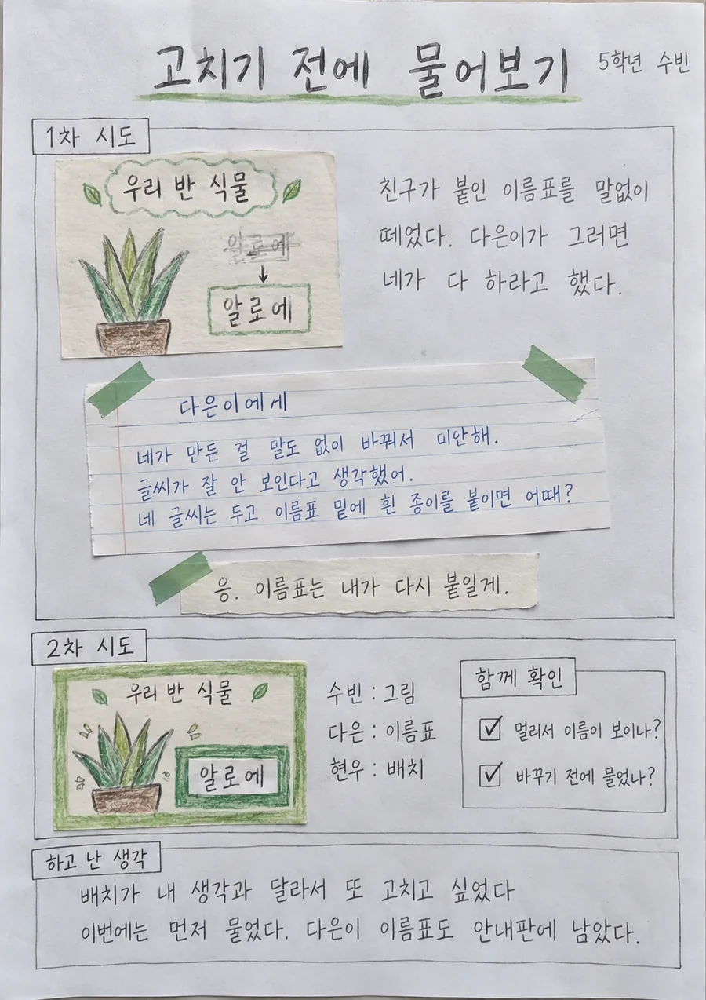
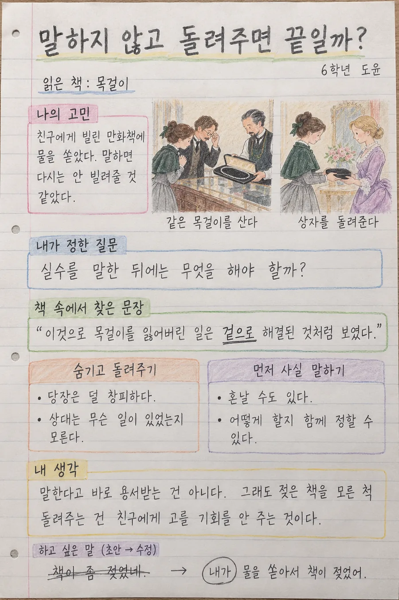
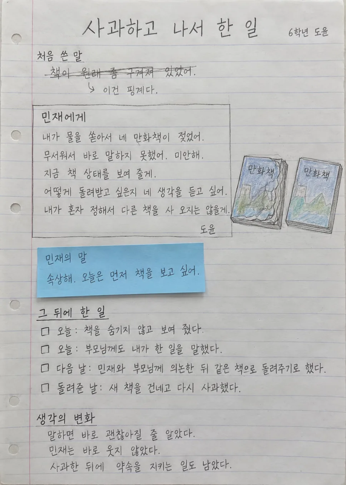
학생은 인물의 답마다 받아들일지 정하고 까닭을 한 줄 씁니다. 학생 기기가 있으면 활동 기록이 독서 포트폴리오에 자동으로 저장되고, 기기가 없는 교실은 설계안, 활동지, 포트폴리오 양식을 A4로 인쇄해 씁니다. 인쇄 양식과 화면의 칸 이름이 같아 차시마다 방식을 바꿔도 기록을 한 파일철에 모을 수 있습니다.
1분 영상 「한 권 활용편: 토끼와 거북이」
유형을 고르면 우리 반 책에 맞는 카드가 바로 만들어져 학생 화면에 뜹니다. 1, 2학년은 같은 활동을 손글씨 활동지로 인쇄해 쓸 수 있습니다.
활동마다 내 마음을 돌아보고, 인물의 마음을 헤아리고, 친구와 생각을 나누는 자리가 됩니다. 학생이 남긴 활동은 저마다의 독서 포트폴리오로 모입니다.
 인물과 대화
인물과 대화 함께 쓰는 교실
함께 쓰는 교실 마음에 남은 장면
마음에 남은 장면 별점과 까닭
별점과 까닭 기억에 남는 낱말 셋
기억에 남는 낱말 셋 인물에게 편지
인물에게 편지 속마음 말풍선
속마음 말풍선 그림으로 표현하기
그림으로 표현하기 읽기 전 짐작, 읽은 후 확인
읽기 전 짐작, 읽은 후 확인

카드마다 「참 잘했어요」 「멋진 생각이에요」 「조금 더 자세히」 「다시 읽어 봐요」 가운데 도장을 고르고 한 줄을 남깁니다.
학생들이 글을 쓰는 동안 선생님은 교실 자리판에서 각자의 글을 보고, 글 옆 여백에 쪽지로 도움말을 붙입니다.
낱말 스무 개로 우리 반 읽기 수준을 보는 짧은 진단이라, 한 화면에서 끝나고 시험처럼 느껴지지 않습니다.
뜻 고르기 6문항과 빈칸 채우기 14문항입니다. 결과에 따라 한 걸음 더, 내 학년 그대로, 천천히 다지기 가운데 맞는 서가의 책을 골라 줍니다. 점수와 수준은 학생에게 보이지 않습니다.


학생들이 읽고, 쓰고, 답한 기록이 성장 데이터로 쌓입니다. 선생님은 이 데이터를 바탕으로 학생마다 맞춤형으로 지도할 수 있습니다.


7시작하기와 학교 관리
선생님은 구글 계정 하나로 바로 시작합니다. 학생은 아이디를 외우지 않아도 학급 코드, 이름, 짧은 비밀번호만으로 들어옵니다.
 1
1「Google 계정으로 계속하기」 누르기
 2
2처음이면 지역과 학교 고르기
 3
3「학급 관리」에서 학급 열기
 4
4학급 코드를 칠판에 띄우기


크롬이 열리는 노트북, 데스크톱, 태블릿이면 됩니다. 따로 설치할 앱은 없고, 학생 계정을 만들 때 보호자 동의 확인을 함께 받습니다.


관리자는 독서 기록을 볼 수만 있고 고칠 수 없습니다. 학생의 마음 일기와 선생님의 관찰 기록은 관리자 화면에 나오지 않습니다. 학생이 안심하고 제 마음을 적을 수 있게 하려는 것입니다.
한 해 운영계획부터 결과보고까지 학교 담당 선생님과 함께 챙깁니다.
학교 규모와 학년 구성에 맞춰 연간 운영계획과 권장 독서 일정을 함께 세우고, 학교와 학급 개설, 계정 만들기를 안내합니다.
온책읽기, 국어 수업, 아침 독서 운영 방법을 안내하고, 사용법, 수업 설계, 학생 활동 관리를 다루는 온라인 연수를 정기적으로 엽니다.
학급별 접속과 독서 현황을 살펴 참여가 뜸한 학급은 담당 선생님께 알려 드리고, 완독 권수와 독후활동 참여를 집계합니다.
월간 운영 현황, 학기별 독서활동 분석, 연간 결과보고서를 보내 드리고, 담당 선생님과 온라인으로 운영을 상담합니다.
로그인, 계정, 오류 문의에 답하고 장애를 처리합니다. 도서와 수업자료의 잘못된 곳을 고치고 보안과 개인정보 보호를 관리합니다.
맺음
AI가 몇 초 만에 글을 써 주는 때일수록, 글을 읽고 뜻을 헤아려 제 생각을 세우는 힘이 학생에게 끝까지 남는 실력이 됩니다. 기술과 지식이 대신할 수 없는 힘, 여러 사람과 어울리며 문제를 풀고 함께 자라는 힘은 책 속 수많은 삶을 살아 본 경험에서 자랍니다. 부기는 그 힘을 교실에서 선생님과 함께 키우려고 만들었습니다.
 어휘력
어휘력밑줄 친 낱말을 누르면 그 학년 말로 쓴 뜻이 뜨고, 진단에서 모른다고 고른 낱말은 읽는 동안 다시 만납니다.
 문해력
문해력모르는 낱말에서 멈추지 않으니 한 권을 끝까지 읽고, 퀴즈와 독후활동으로 읽은 내용을 다시 짚습니다.
 사고력
사고력책 속 인물이 “그렇게 생각한 까닭은?” 하고 묻고, 학생이 한 말에 다시 물어 제 생각을 말로 세우게 합니다.
인물과 작가의 삶을 살아 보며 나를 알고 친구의 마음을 헤아립니다. 그 경험이 독서 포트폴리오에 쌓입니다.
 부기
부기